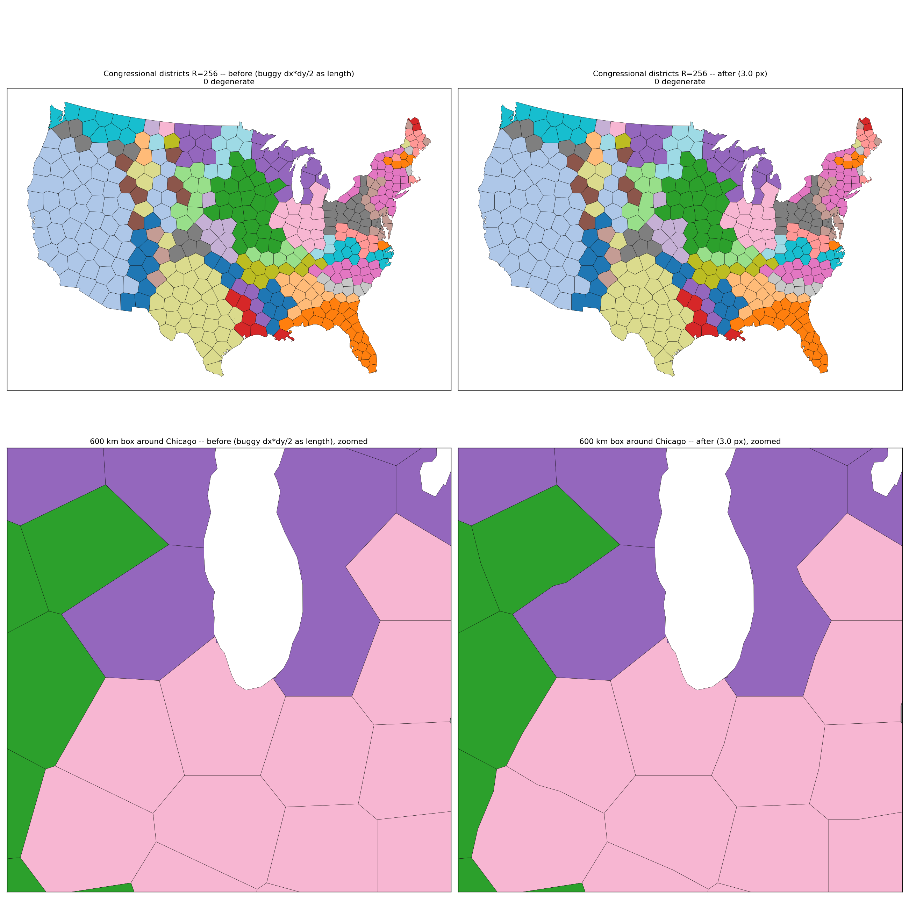
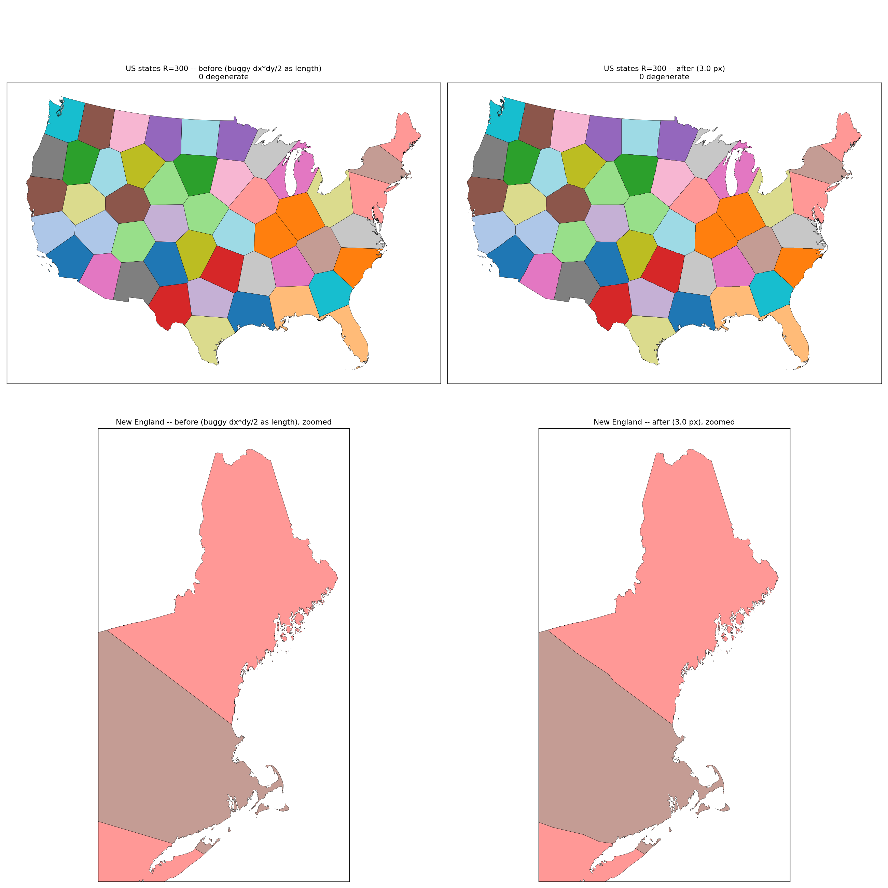
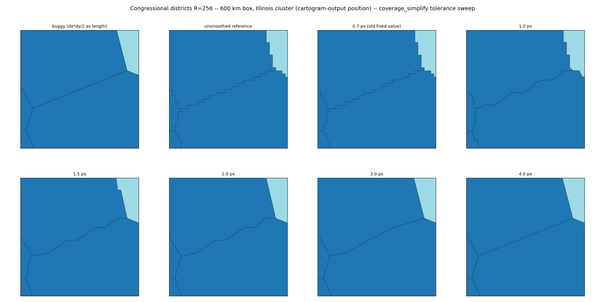
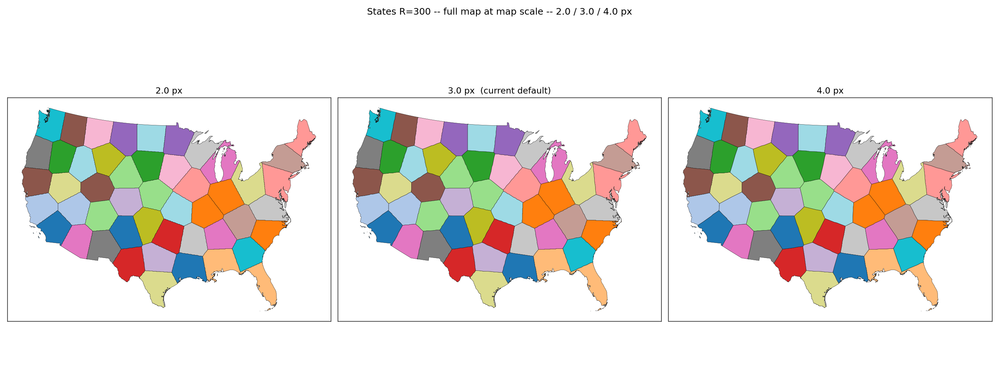
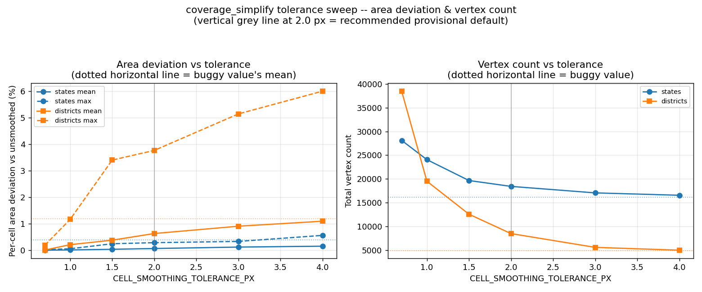
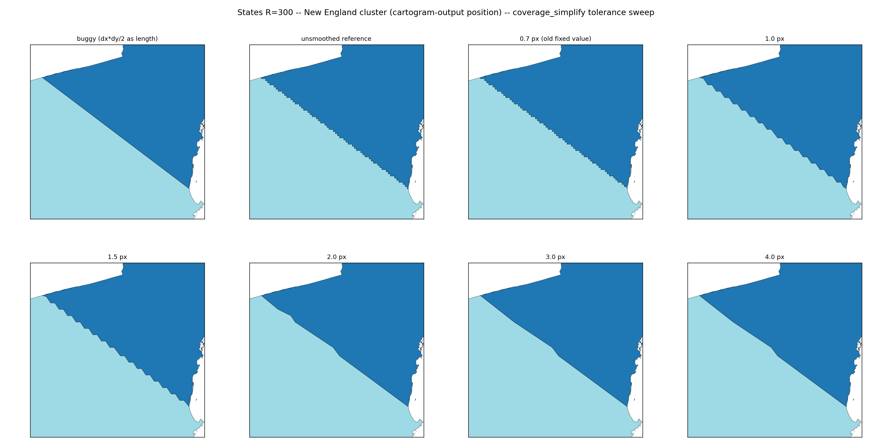

coverage_simplify was passed an area-sized tolerance (dx*dy/2) instead of a length, over-smoothing pixel-staircase cell boundaries into unnaturally straight lines; fixed to sqrt(dx*dy/2).
Branch fix/voronoi-smoothing-tolerance (this PR) vs fix/voronoi-cell-extraction (base branch, before this fix).
Bug: _label_2d_to_cell_polys in src/carto_flow/voronoi_cartogram/fields/_raster.py computed tol = dx * dy / 2.0 and passed it to shapely.coverage_simplify(cells, tol, simplify_boundary=False). coverage_simplify's tolerance is a **length** (max vertex displacement), not an area — dx*dy/2 is an area, about 1.5e8 m at R=256 on a 4.4e6 m wide map, roughly 8 orders of magnitude too large. This over-smoothed cell boundaries into unnaturally straight lines. Fix: tol = sqrt(dx * dy / 2.0) (about 0.7 px).
Setup: load_us_census(level="congressional_district", population=True) -> simplify_coverage(tolerance=5000, min_island_size=50000) -> RasterBackend(resolution=R), VoronoiOptions(n_iter=30, area_cv_tol=0.1), group_by="State Name" for districts (R=64, 128, 256); load_us_census(population=True), RasterBackend(resolution=300), same VoronoiOptions, no group_by, for states (R=300).
"Before" and "after" runs share the same generator positions (the tolerance affects only final polygon smoothing, not the Lloyd relaxation used to place generators), so this isolates the effect of the tolerance fix on cell geometry. "Reference" cells for per-cell area deviation are the same field's cells with coverage_simplify skipped entirely (no smoothing).
| File | Content |
|---|---|
districts_r256_before_after.png | Full US congressional districts (top) and a 600 km box around Chicago (bottom), before (buggy) vs after (3.0 px, current default), one colour per state |
states_r300_before_after.png | Full US states (top) and New England (bottom), before (buggy) vs after (3.0 px, current default) |
**Updated 2026-09-18 (second follow-up):** these two figures were regenerated with after = 3.0 px, the parameter's current default (see RasterBackend.cell_smoothing_px below) -- they originally showed after = 0.7 px (this PR's first commit) and were later considered for 2.0 px; the historical 0.7 px numbers in the table directly below are kept for reference, but the images now reflect 3.0 px.
Both zoomed insets show the effect directly: "before" boundaries are reduced to a handful of near-straight segments (e.g. the Maine/New-Hampshire border collapses to one line); "after" boundaries follow the pixel grid staircase closely, as intended by coverage_simplify's half-pixel-scale smoothing.
| Case | Before (mean / max) | After (mean / max) |
|---|---|---|
| districts R=64 | 3.96 / 43.04 | 0.91 / 43.04 |
| districts R=128 | 2.22 / 13.04 | 0.30 / 2.03 |
| districts R=256 | 1.18 / 6.00 | 0.11 / 0.91 |
| states R=300 | 0.39 / 1.42 | 0.01 / 0.06 |
(Max deviation at R=64 is unchanged because it comes from a cell whose pixel-union polygon has almost no interior edges left to simplify at either tolerance; smoothing does not touch it either way.)
n_iter=30, area_cv_tol=0.1, not reached in any case)| Case | Mean area error % (before -> after) | Max area error % (before -> after) | Total vertices (before -> after) | Wall time s (before -> after) |
|---|---|---|---|---|
| districts R=64 | 44.82 -> 44.85 | 118.42 -> 128.10 | 4,626 -> 9,854 | 0.54 -> 0.44 |
| districts R=128 | 38.40 -> 38.37 | 109.74 -> 107.24 | 4,755 -> 16,839 | 1.30 -> 1.41 |
| districts R=256 | 37.14 -> 37.14 | 88.10 -> 87.99 | 4,884 -> 27,152 | 4.21 -> 3.38 |
| states R=300 | 5.01 -> 4.90 | 32.97 -> 33.15 | 16,143 -> 26,655 | 1.17 -> 1.04 |
Mean area error is unchanged (noise-level, <=0.03 pp) at every resolution, as expected: the smoothing step redistributes area between adjacent cells but leaves the overall coverage exact. Max area error moves by a few points in both directions (worst case districts R=64: +9.7 pp); in every case the outlier district is a small, badly non-converged cell (final_area_cv well above the area_cv_tol=0.1 target at n_iter=30), and *which* district is the outlier changes between before/after — consistent with re-partitioning noise at an unconverged iteration count, not a systematic effect of the tolerance fix. Total vertex count roughly doubles to triples: the buggy over-large tolerance was stripping the great majority of staircase vertices; the fix keeps more of the real pixel-boundary detail, as intended.
analyze_topology)| Case | Satellites (before -> after) | Adjacency violated (before -> after) | Misaligned orientation (before -> after) | Degenerate cells (before -> after) |
|---|---|---|---|---|
| districts R=64 | 51 (31 groups) -> 51 (31 groups) | n/a | n/a | 0 -> 0 |
| districts R=128 | 36 (21 groups) -> 36 (21 groups) | n/a | n/a | 0 -> 0 |
| districts R=256 | 22 (16 groups) -> 22 (16 groups) | n/a | n/a | 0 -> 0 |
| states R=300 | n/a | 36 / 109 pairs -> 36 / 109 pairs | 5 -> 5 | 0 -> 0 |
Topology counts are identical before/after in every case — expected, since they depend on generator positions (unaffected) and raster-resolution adjacency (also unaffected; only the final smoothed polygon shape changes).
tests/test_voronoi_cartogram.py::TestSliverHoleBoundary:
test_spike_ring_does_not_collapse_a_cell: per-cell area assertion tightened fromarea > 0.25 * n_px * dx * dy to area == pytest.approx(n_px * dx * dy, rel=0.15) (measured ratios after the fix: 0.95 and 1.10).
test_failed_clip_falls_back_to_the_pixel_union: same tightening(area > 0.25 * 5 * dx * dy -> area == pytest.approx(5 * dx * dy, rel=0.15)).
Both were loosened in PR #25 specifically because of this tolerance bug; a rel=0.15 bound reflects the actual measured deviation with the fix and would have failed against the old dx*dy/2 tolerance (which pushed the smaller cell's area up ~2.5x on this 4x4 grid, well outside 15%).
**User feedback on the fix above:** the unit fix is right, but sqrt(dx*dy/2) (~0.7 px) still leaves visible pixel staircases on the states map at R=300, where the old buggy (area-as-length) value happened to produce smooth borders — the user called the jagged look a regression. This section sweeps the tolerance to find a value that removes the staircase without collapsing borders back to straight lines.
**Code change:** tol is now CELL_SMOOTHING_TOLERANCE_PX * math.sqrt(dx * dy), a module-level pixel-unit constant in src/carto_flow/voronoi_cartogram/fields/_raster.py (simplify_boundary=False unchanged). CELL_SMOOTHING_TOLERANCE_PX replaces the old fixed sqrt(dx*dy/2) (~0.7 px) formula. **The final value is the user's decision** — this PR sets it to the recommendation below as a provisional default.
Sweep values: 0.7, 1.0, 1.5, 2.0, 3.0, 4.0 px, plus the pre-fix buggy value (dx*dy/2 passed as a length) for reference. Setup is the same as above, but states R=300 and districts R=256 only, run once each (generator positions are identical across tolerance values — smoothing is post-hoc, applied only to the final cell polygons — so re-extracting cells per tolerance value from the same relaxed field reproduces the exact positions in the rest of this document). "Unsmoothed reference" = the same cells with CELL_SMOOTHING_TOLERANCE_PX = 0 (coverage_simplify called with tol=0, a near no-op). "Area deviation" below is per-cell |area - reference_area| / reference_area.
**States R=300** (grid cell ~3638 x 3641 m; degenerate cells: 0 at every value)
| Tolerance | Mean area dev % | Max area dev % | Vertices | Max Hausdorff (px) | Wall (s) |
|---|---|---|---|---|---|
| buggy (dx\*dy/2 as length) | 0.385 | 1.422 | 16,143 | 2.99 | 1.04 |
| 0.7 px | 0.003 | 0.022 | 28,105 | 0.70 | 1.09 |
| 1.0 px | 0.012 | 0.057 | 24,049 | 0.89 | 0.98 |
| 1.5 px | 0.037 | 0.246 | 19,649 | 1.41 | 1.01 |
| 2.0 px | 0.066 | 0.287 | 18,411 | 1.59 | 1.05 |
| **3.0 px (current default)** | **0.120** | **0.333** | **17,043** | **2.17** | **0.99** |
| 4.0 px | 0.154 | 0.561 | 16,543 | 2.17 | 1.01 |
**Districts R=256** (grid cell ~4264 x 4268 m; degenerate cells: 0 at every value)
| Tolerance | Mean area dev % | Max area dev % | Vertices | Max Hausdorff (px) | Wall (s) |
|---|---|---|---|---|---|
| buggy (dx\*dy/2 as length) | 1.179 | 6.000 | 4,884 | 2.89 | 3.97 |
| 0.7 px | 0.009 | 0.192 | 38,484 | 0.66 | 3.96 |
| 1.0 px | 0.211 | 1.163 | 19,496 | 1.20 | 4.27 |
| 1.5 px | 0.380 | 3.401 | 12,546 | 1.49 | 5.00 |
| 2.0 px | 0.631 | 3.766 | 8,460 | 1.60 | 4.26 |
| **3.0 px (current default)** | **0.907** | **5.143** | **5,560** | **2.09** | **4.68** |
| 4.0 px | 1.096 | 6.000 | 4,962 | 2.09 | 5.29 |
Vertex count and area deviation both increase monotonically with tolerance, as expected (more smoothing = fewer vertices = more area moved between adjacent cells). Wall time is flat across tolerance values (smoothing cost does not scale noticeably with tolerance at these resolutions); degenerate-cell count is 0 throughout, so the tolerance choice does not interact with cell degeneracy.
| File | Content |
|---|---|
sweep_states_new_england.png | States R=300: buggy, unsmoothed reference, and 0.7/1.0/1.5/2.0/3.0/4.0 px, same 150 km box |
sweep_districts_chicago.png | Districts R=256: same 8 panels, 80 km box |
sweep_metrics.png | Area deviation (mean/max) and vertex count vs tolerance, both cases |
sweep_full_states.png | Full states map at 2.0/3.0/4.0 px, 1x3 grid, map scale (not zoomed) |
**sweep_full_states.png finding:** at full map scale the three tolerances are visually indistinguishable from each other -- the staircase-vs-smooth difference that matters is only visible when zoomed to a single border, as in sweep_states_new_england.png. This confirms the tolerance choice is a zoomed/detail-view concern, not something that changes the map's overall appearance.
**Inset box note:** this is an *unweighted* CVT (equal target area per generator, not population-weighted), and n_iter=30 with area_cv_tol=0.1 is far from fully converged (area_cv_tol is not reached — see the convergence table above), so generators move substantially from their real-world positions to approach equal area. A box drawn from real New England / Chicago geography mostly misses the relocated cells. Both insets are instead centered on the shared border between two specific cells in the cartogram *output* (Maine/New Hampshire for states; the two most-adjacent Illinois districts for districts, as a stand-in for "Chicago" since Illinois's districts stay grouped via group_by, though not at their real location). This preserves the original figure's zoom scale and purpose (show whether borders are staircased) without the box missing the cells entirely.
At dpi 130, the states inset (the sharper, more informative case: a mostly-straight generator-to-generator border under real Lloyd relaxation) shows a clearly visible staircase at 0.7-1.5 px, a barely-perceptible ripple at 2.0 px, and an indistinguishable-from-buggy straight line at 3.0-4.0 px. The districts inset (a border with more natural bends) shows only mild jaggedness at any tolerance, since the border itself already has genuine corners at this zoom.
The original recommendation above (2.0 px) was reviewed by the user directly against sweep_states_new_england.png and judged still visibly jagged. **The default is now 3.0 px**, set via a new RasterBackend.cell_smoothing_px parameter (see below) rather than only the module constant, so it no longer requires editing library code to change. Cost at 3.0 px vs the previous 2.0 px candidate: mean/max area deviation 0.120% / 0.333% (was 0.066% / 0.287%) at states R=300, and 0.907% / 5.14% (was 0.631% / 3.77%) at districts R=256 -- still well under 1% mean deviation in both cases. sweep_full_states.png shows 2.0, 3.0, and 4.0 px are visually indistinguishable at full map scale; the difference only shows up zoomed in on a single border, which is exactly where the user's original complaint was.
**New parameter:** RasterBackend(cell_smoothing_px=...) (default 3.0) threads through to RasterField(cell_smoothing_px=...), replacing the old module-constant-only mechanism (CELL_SMOOTHING_TOLERANCE_PX in _raster.py is now only that parameter's *default value*, not the sole source of truth). 0 disables smoothing entirely. Docstring on both: "Tolerance for smoothing pixel staircases on extracted cells, in final-grid pixels (the extraction grid is output_resolution/ final_resolution or 4x resolution). Resolution-independent by construction. For cartographic generalisation in map units, apply carto_flow.geo_utils.simplify_coverage to the result instead." Validated >= 0 in both places.
At the now-default 3.0 px, tol (~3 grid cells, i.e. ~51,000 m on the TestSliverHoleBoundary tests' 4x4/17,000 m synthetic grid) is even larger relative to that coarse grid than at 2.0 px, so the widened bounds from the 2.0 px follow-up were re-measured directly (both tests call RasterField without an explicit cell_smoothing_px, so they pick up the new 3.0 px default automatically):
| Test | Cell | Measured ratio at 2.0 px | Measured ratio at 3.0 px | Bound |
|---|---|---|---|---|
test_spike_ring_does_not_collapse_a_cell | cell 0 (11 px) | 1.29x | 1.29x | rel=0.7 |
test_spike_ring_does_not_collapse_a_cell | cell 1 (5 px, spike ring) | 0.37x | 0.37x | rel=0.7 |
test_failed_clip_falls_back_to_the_pixel_union | cell 1 (5 px, fallback path) | 0.30x | 0.30x | rel=0.75 |
The ratios are identical at 2.0 and 3.0 px: on this tiny synthetic grid, coverage_simplify has already removed essentially all the removable interior vertices by 2.0 px, so further increasing the tolerance has no additional effect on these two specific cells (there is nothing left to simplify). The rel=0.7/rel=0.75 bounds set during the 2.0 px follow-up already cover 3.0 px with no change needed; both tests pass unmodified. As before, both tests still assert exact total coverage (rel=1e-9) and that no cell collapses to a Point/zero-area geometry — the invariants the tests exist to protect.

Congressional districts (full US and a Chicago zoom), before (buggy) vs after (current default, 3.0 px): pixel-staircase boundaries restored instead of near-straight segments.

US states (full US and New England), before (buggy) vs after (current default, 3.0 px): the Maine/New-Hampshire border no longer collapses to one straight line.

Congressional districts R=256, same 2x4 grid, zoomed on the shared border of the two most tightly-adjacent Illinois districts.

Full US states map (not zoomed) at 2.0/3.0/4.0 px, side by side, so the user can judge jaggedness at map scale rather than only in a tight inset.

Per-cell area deviation and total vertex count vs tolerance, two panels, buggy value and (originally) the 2.0 px candidate marked; the vertical marker line predates the 3.0 px decision below.

States R=300, 2x4 grid (buggy, unsmoothed reference, 0.7-4.0 px) zoomed on the Maine/New Hampshire border (which the original PR figure showed collapsing to a straight line under the buggy tolerance).